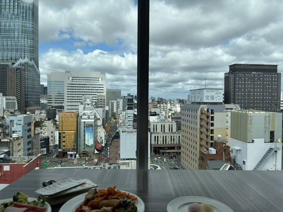
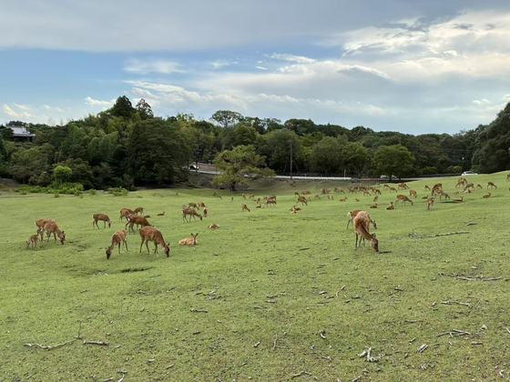
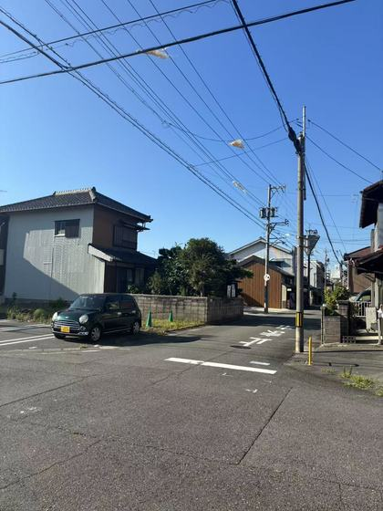
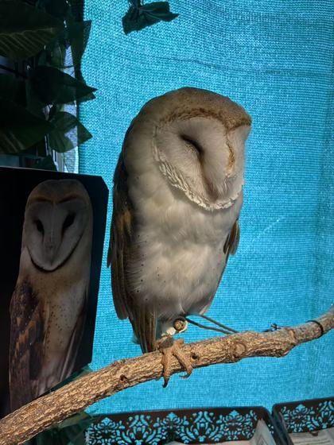
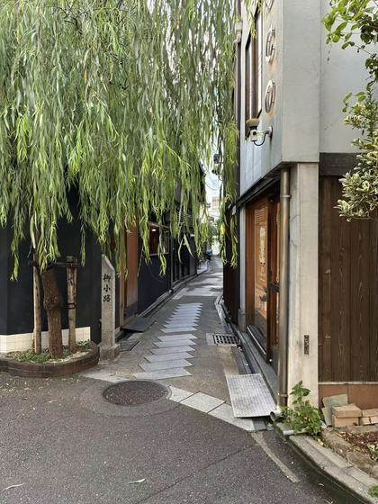
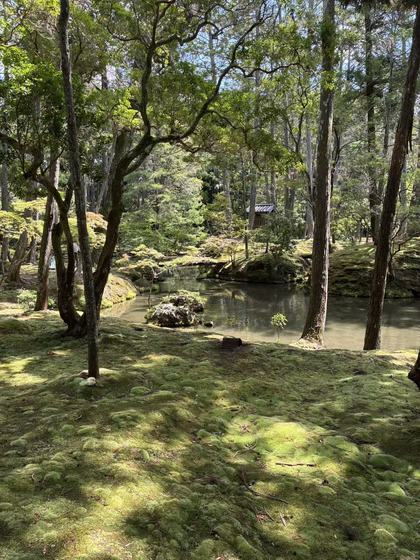

IDENTITY
Intelligent Medicine Explorer
A first-year student exploring intelligent medical engineering and brain-computer interfaces.
Nice to meet you
A first-year student exploring intelligent medical engineering, brain-computer interfaces, and cybersecurity.
01 / WHAT I LIKE
kore ga suki desu






On repeat
02 / DIGITAL TWIN
AI CONVERSATION INTERFACE
It knows about my identity, interests, current projects, and the directions I care about. Ask it anything, just like an AI assistant.
Ready to chat
Elin AI · Local knowledge base · Responses are simulated
3D neural background — “Bioelectric consciousness engine” by VoXelo on CodePen. All rights belong to the original author.
03 / FEEDBACK
USER FEEDBACK INTERFACE
Your feedback helps me improve this space, the portal experience, and the digital twin.
04 / CONTACT
OPEN CHANNEL
Open to questions, ideas, and collaboration — feel free to reach out.